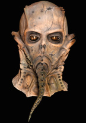

- 
William Malone
Halloween Mask Sculptor / Character Design /Motion Picture DirectorWe are honored to have one of our all time favorite Halloween Mask Sculptors on our team, William Malone!
Born and raised in Lansing, Michigan, William Malone was inspired with film making during weekly trips to the Lucian Theater to see the latest releases of horror films. By age 14, Malone was making home movies with a 8mm camera and designing monster masks for himself and friends to wear for Halloween.
Malone moved to Los Angeles, California at the age 19 to become a rock and roll star, but a friend's request drew him back into mask making which led Malone to work for Don Post Studios in makeup, costume and mask making. In fact, it was Malone who designed and sculpted the mask used for the character of Michael Myers in the John Carpenter Classic, Halloween (1978), which he used from the mold of a previous design of William Shatner Star Terk Captain Kirk.
After attending classes at UCLA to study directing Malone wrote and directed the sci-fi horror shocker Scared to Death (1980), a tale of a genetic creature haunting the sewers of Los Angeles. In 1984, Malone directed Creature (1985), which was nominated for a Saturn Award at the 1985 Academy of Science Fiction and Horror films.
Malone spent the next 14 years directing episodes for the TV series Freddy's Nightmares, the HBO series Tales From the Crypt, Sleepwalkers and a made for TV movie W.I.E.R.D. World. In 1999, Joel Silver and Robert Zemeckis hired Malone to direct the remake of House on Haunted Hill and in 2002, Malone directed his own feature Feardotcom. In 2005 Malone was invited by Showtime Masters of Horror creator Mick Garris to direct an episode for the series titled The Fair Haired Child.
Trick or Treat Studios is honored to have Malone on our sculpting team!